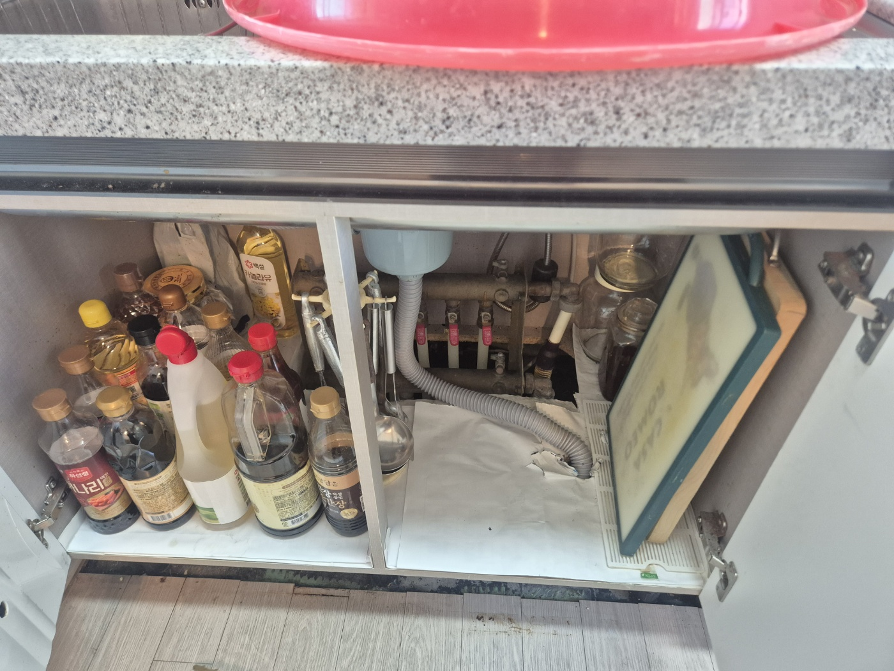
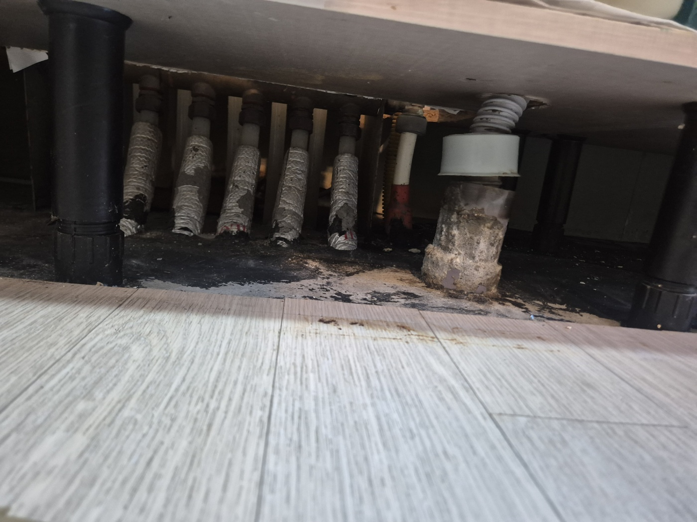
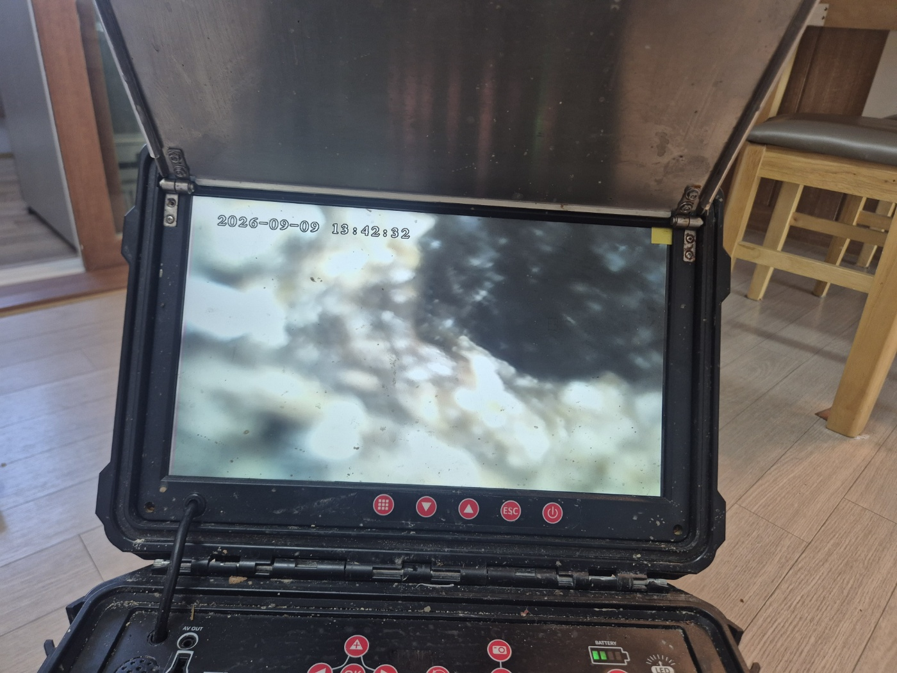
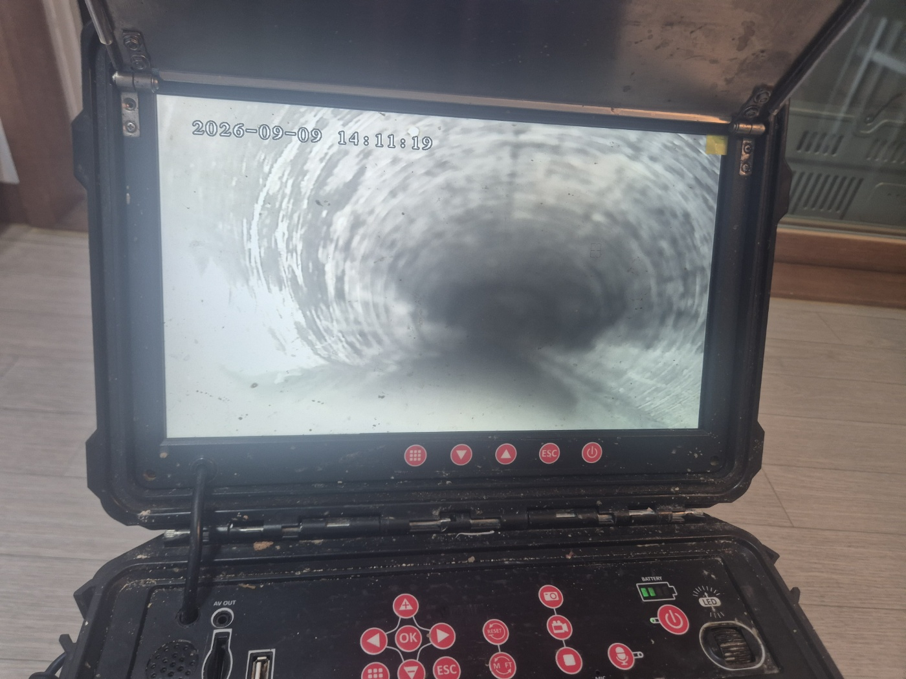

안녕하세요.. 고고고 설비입니다.. 오늘은 평택시 비전동에 있는 아파트에서 싱크대막힘 신고를 받고 다녀온 현장입니다.
1. 현장 도착과 첫인상
싱크대 하부장 안에 양념통이 가득 들어있어서, 먼저 하나씩 옆으로 옮겨두고 배관부터 확인했습니다. 밸브며 배관 연결부가 오래돼 보였어요.
2. 바닥 쪽까지 살펴봤어요
하부장 안쪽 바닥까지 낮은 자세로 들여다봤는데, 배관 지지대 주변에 시커먼 찌꺼기가 오랫동안 눌어붙어 있었습니다.. 한쪽 배관 아래엔 하얗게 굳은 석회질 덩어리까지 붙어있더라고요.

3. 내시경으로 안쪽 상태 확인
바로 뚫기 전에 내시경 카메라부터 넣어서 배관 안쪽 상태를 확인했습니다. 화면으로 보니 여기저기 이물질이 뿌옇게 붙어있는 게 보였어요.


4. 통수 확인
작업을 마치고 다시 한번 내시경으로 안쪽을 확인했는데, 30분 전과는 다르게 배관 안쪽이 훨씬 깨끗하게 뚫려있는 게 보였습니다.. 물도 막힘 없이 잘 내려가는 걸 확인했어요.

싱크대는 눈에 안 보이는 하부 배관 쪽에 찌꺼기가 오래 쌓이는 경우가 많아서, 배수가 조금이라도 느려지면 미리 점검받으시는 걸 권해드립니다.
고고고 설비는 주택, 아파트, 원룸, 상가, 공장의 생활 하수 오수 배관을 관리해 주는 업체입니다. 고고고 설비에 전화 주시면 친절상담 정확한 진단 확실한 해결로 보답해 드리겠습니다!!